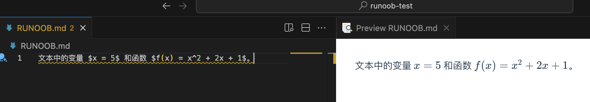
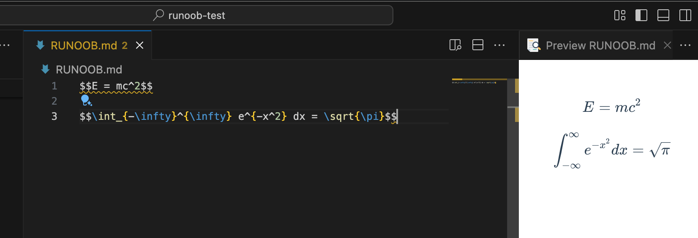
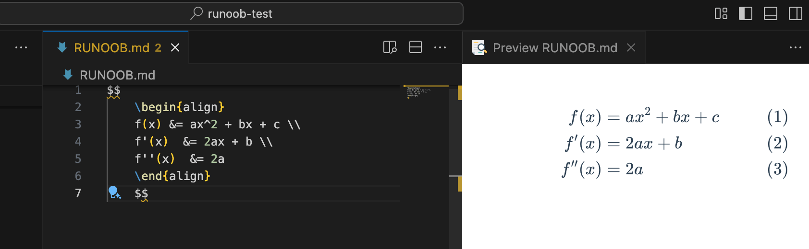
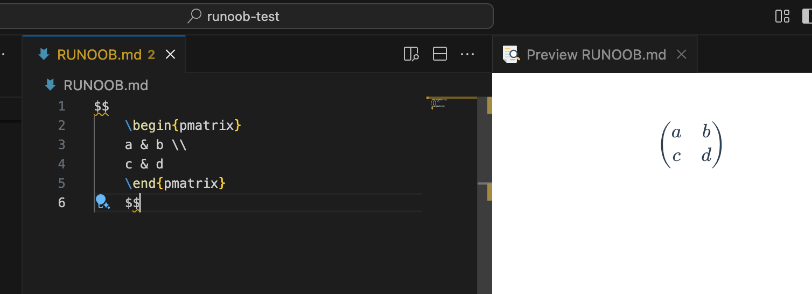

Markdown 数式
LaTeX 数式の基礎
Markdown では、数式は LaTeX 構文で表現します。LaTeX は強力な組版システムであり、複雑な数式を含む文書に特に適しています。
基本構文構造
- コマンド：バックスラッシュで始まり
\、例えば\alpha、\sum - 引数：波括弧で囲み
{}、例えば\frac{a}{b} - 下付き文字：を使用
_、例えばx_1 - 上付き文字：を使用
^、例えばx^2 - グループ化：波括弧で複数の文字をまとめ、例えば
x_{i+1}
よく使う LaTeX コマンド
\alpha, \beta, \gamma % 希腊字母
\sum, \prod, \int % 求和、乘积、积分
\frac{分子}{分母} % 分数
\sqrt{表达式} % 平方根
\sqrt[n]{表达式} % n次根
インライン数式とブロック数式
インライン数式
インライン数式は単一のドル記号で$囲み、数式はテキストに埋め込まれます。例：テキスト内の変数 $x = 5$ と関数 $f(x) = x^2 + 2x + 1$。
文本中的变量 $x = 5$ 和函数 $f(x) = x^2 + 2x + 1$。

ブロック数式
ブロック数式は二重ドル記号で$$囲み、数式は独立した行として中央に表示されます：
E = mc^2
\int_{-\infty}^{\infty} e^{-x^2} dx = \sqrt{\pi}
$$E = mc^2$$
$$\int_{-\infty}^{\infty} e^{-x^2} dx = \sqrt{\pi}$$

複数行の数式
を使用align環境で複数行の整列数式を作成します：
\begin{align}
f(x) &= ax^2 + bx + c \
f'(x) &= 2ax + b \
f''(x) &= 2a
\end{align}
$$
\begin{align}
f(x) &= ax^2 + bx + c \\
f'(x) &= 2ax + b \\
f''(x) &= 2a
\end{align}
$$

よく使う数学記号
基本演算記号
- 加減乗除：
+,-,\times,\div - 分数：
\frac{a}{b}→ $\frac{a}{b}$ - ルート：
\sqrt{x},\sqrt[n]{x}→ $\sqrt{x}$, $\sqrt[n]{x}$ - 指数：
x^2,e^{i\pi}→ $x^2$, $e^{i\pi}$
比較記号
- 等号：
=,\neq,\equiv→ $=$, $\neq$, $\equiv$ - 大小：
<,>,\leq,\geq→ $<$, $>$, $\leq$, $\geq$ - 約等号：
\approx,\sim→ $\approx$, $\sim$
集合記号
- 属する：
\in,\notin→ $\in$, $\notin$ - 含む：
\subset,\supset→ $\subset$, $\supset$ - 共通部分・和集合：
\cap,\cup→ $\cap$, $\cup$ - 空集合：
\emptyset→ $\emptyset$
ギリシャ文字
よく使うギリシャ文字とその LaTeX 表記：
| 小文字 | 大文字 | LaTeX | 小文字 | 大文字 | LaTeX |
|---|---|---|---|---|---|
| α | Α | \alpha |
ν | Ν | \nu |
| β | Β | \beta |
ο | Ο | o |
| γ | Γ | \gamma |
π | Π | \pi |
| δ | Δ | \delta |
ρ | Ρ | \rho |
| ε | Ε | \epsilon |
σ | Σ | \sigma |
| θ | Θ | \theta |
τ | Τ | \tau |
| λ | Λ | \lambda |
φ | Φ | \phi |
| μ | Μ | \mu |
ω | Ω | \omega |
特殊関数と記号
- 三角関数：
\sin,\cos,\tan - 対数：
\log,\ln - 極限：
\lim_{x \to 0} - 総和：
\sum_{i=1}^{n} - 積分：
\int_{a}^{b} - 無限：
\infty
行列の表記
を使用matrix環境：
\begin{pmatrix}
a & b \
c & d
\end{pmatrix}
$$
\begin{pmatrix}
a & b \\
c & d
\end{pmatrix}
$$
異なる括弧タイプの行列：
pmatrix：丸括弧 $\begin{pmatrix} a & b \ c & d \end{pmatrix}$bmatrix：角括弧 $\begin{bmatrix} a & b \ c & d \end{bmatrix}$vmatrix：行列式 $\begin{vmatrix} a & b \ c & d \end{vmatrix}$
クリックしてノートを共有
<p style="font-size:14px;">ノートは本記事の内容の拡張である必要があります！</p><br> <p style="font-size:12px;"><a href="../tougao.html" target="_blank">記事の投稿はこちらをクリック</a></p> <p style="font-size:14px;"><a href="../w3cnote/runoob-user-test-intro.html" target="_blank">登録招待コードの取得方法</a></p> <h3 class="text-muted"><i class="fa fa-info-circle" aria-hidden="true"></i> ノートを共有する前に<a href=";.html" class="runoob-pop">ログイン</a>が必要です！</h3> <p><a href="../w3cnote/runoob-user-test-intro.html" target="_blank">登録招待コードの取得方法</a></p>